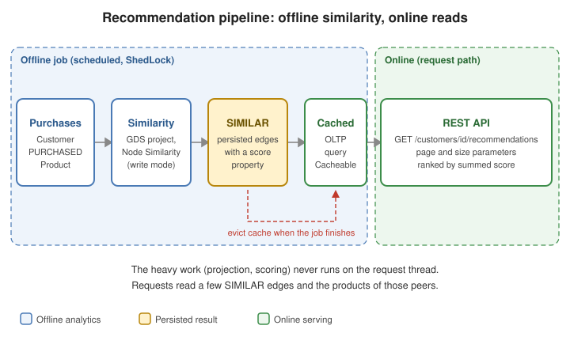

Opportunity Detection & Recommendations
|
This content was generated with the assistance of AI and should be verified against the official documentation before being relied on in production. |
This page builds a recommendation and opportunity-detection feature on top of a purchase graph: "customers who
bought what you bought also bought this", "which product categories does this company not buy yet", and "who can
introduce us to that contact". The expensive part (similarity between customers) runs offline and is persisted; the
request path only reads a few relationships. The GDS plumbing — the projection lifecycle, the GdsGraphs helper,
memory estimation and scheduling with ShedLock — is defined once in
Calling GDS from Spring Boot and is used here without
being repeated.
Problem
A recommendation is structurally "find the customers most similar to this one and suggest what they bought that this one has not". The algorithmic side (Node Similarity, Filtered Node Similarity, KNN) is explained in the Recommendation engines section of the Neo4j Reference and in Similarity, Embeddings and ML Pipelines; this page is about the application around it. Four questions have to be answered:
-
Which model lets one graph serve recommendations, whitespace analysis and introductions?
-
Where does similarity live: computed per request (simple, slow) or precomputed and persisted (fast, stale by up to one schedule period)?
-
How is the result served with predictable latency, pagination and caching?
-
How is it tested against a real server with the GDS plugin?
The figure shows the answer used throughout the page: an offline job turns purchases into SIMILAR relationships,
and the online path only reads them.

Graph model
A Customer is a buyer account that works at a Company; a Contact is a person we know (a sales rep or a prospect’s
employee) who KNOWS other contacts. PURCHASED carries the quantity and date and is a relationship properties
class, IN_CATEGORY classifies products, and SIMILAR is derived data written by the offline job, never by the
application code that records purchases. The mapping annotations are described in
Spring Data Neo4j; the entities are:
import java.time.LocalDate;
import java.util.ArrayList;
import java.util.List;
import org.springframework.data.neo4j.core.schema.Id;
import org.springframework.data.neo4j.core.schema.Node;
import org.springframework.data.neo4j.core.schema.Relationship;
import org.springframework.data.neo4j.core.schema.RelationshipId;
import org.springframework.data.neo4j.core.schema.RelationshipProperties;
import org.springframework.data.neo4j.core.schema.TargetNode;
@Node("Customer")
public class Customer {
@Id
private String id;
private String name;
@Relationship(type = "WORKS_AT", direction = Relationship.Direction.OUTGOING)
private Company company;
@Relationship(type = "PURCHASED", direction = Relationship.Direction.OUTGOING)
private List<Purchase> purchases = new ArrayList<>();
protected Customer() {
}
public Customer(String id, String name, Company company) {
this.id = id;
this.name = name;
this.company = company;
}
public void purchase(Product product, int quantity, LocalDate date) {
purchases.add(new Purchase(product, quantity, date));
}
public String getId() { return id; }
public String getName() { return name; }
}
@Node("Company")
public class Company {
@Id
private String id;
private String name;
private String segment;
protected Company() {
}
public Company(String id, String name, String segment) {
this.id = id;
this.name = name;
this.segment = segment;
}
}
@Node("Product")
public class Product {
@Id
private String id;
private String title;
@Relationship(type = "IN_CATEGORY", direction = Relationship.Direction.OUTGOING)
private Category category;
protected Product() {
}
public Product(String id, String title, Category category) {
this.id = id;
this.title = title;
this.category = category;
}
}
@Node("Category")
public class Category {
@Id
private String id;
private String name;
protected Category() {
}
public Category(String id, String name) {
this.id = id;
this.name = name;
}
}
@Node("Contact")
public class Contact {
@Id
private String id;
private String name;
@Relationship(type = "WORKS_AT", direction = Relationship.Direction.OUTGOING)
private Company company;
@Relationship(type = "KNOWS", direction = Relationship.Direction.OUTGOING)
private List<Contact> knows = new ArrayList<>();
protected Contact() {
}
public Contact(String id, String name, Company company) {
this.id = id;
this.name = name;
this.company = company;
}
}
@RelationshipProperties
public class Purchase {
@RelationshipId
private Long id;
@TargetNode
private Product product;
private int quantity;
private LocalDate purchasedAt;
protected Purchase() {
}
public Purchase(Product product, int quantity, LocalDate purchasedAt) {
this.product = product;
this.quantity = quantity;
this.purchasedAt = purchasedAt;
}
}See Spring Data Neo4j — Metadata-based mapping
for @Node, @Relationship and @RelationshipProperties. Business keys (id) are used as @Id because the
recommendation job and the REST API address customers by them; the database-internal identity is elementId(), never
id(). SIMILAR is deliberately not mapped on Customer: loading an aggregate must not drag the derived edges
along, and the queries that read them are explicit Cypher.
Mapping PURCHASED as a collection of Purchase makes save(customer) rewrite the customer’s purchases. For a
high-volume purchase feed use a dedicated write (next sections) instead of loading and saving the aggregate.
|
Schema
Constraints and indexes are created at startup with idempotent IF NOT EXISTS statements, so that every
deployment converges on the same schema. Uniqueness constraints give the MERGE of the write path an index to seek
through; the range index on purchasedAt serves time-window queries:
import org.springframework.boot.ApplicationRunner;
import org.springframework.context.annotation.Bean;
import org.springframework.context.annotation.Configuration;
import org.springframework.data.neo4j.core.Neo4jClient;
@Configuration
public class RecommendationSchema {
private static final List<String> STATEMENTS = List.of(
"CREATE CONSTRAINT customer_id IF NOT EXISTS FOR (c:Customer) REQUIRE c.id IS UNIQUE",
"CREATE CONSTRAINT product_id IF NOT EXISTS FOR (p:Product) REQUIRE p.id IS UNIQUE",
"CREATE CONSTRAINT company_id IF NOT EXISTS FOR (c:Company) REQUIRE c.id IS UNIQUE",
"CREATE CONSTRAINT category_id IF NOT EXISTS FOR (c:Category) REQUIRE c.id IS UNIQUE",
"CREATE CONSTRAINT contact_id IF NOT EXISTS FOR (c:Contact) REQUIRE c.id IS UNIQUE",
"CREATE INDEX purchased_at IF NOT EXISTS FOR ()-[p:PURCHASED]-() ON (p.purchasedAt)");
@Bean
ApplicationRunner createRecommendationSchema(Neo4jClient client) {
return args -> STATEMENTS.forEach(statement -> client.query(statement).run());
}
}Each statement is the form documented in Cypher manual — Constraints and Cypher manual — Indexes; the background (and the option of letting SDN create constraints itself) is in Indexes and Constraints. Running schema statements from application code is fine for a single service; with several services sharing the database, own the schema in one of them or in a migration tool.
Writes
Recording a purchase is a small, idempotent write. A MERGE keyed on the business ids makes a replayed event
harmless (a retried Kafka message, see Kafka messaging), and it avoids loading the customer aggregate:
@Service
public class PurchaseWriter {
private final Neo4jClient client;
public PurchaseWriter(Neo4jClient client) {
this.client = client;
}
@Transactional
public void record(String customerId, String productId, int quantity, LocalDate date) {
client.query("""
MATCH (c:Customer {id: $customerId}), (p:Product {id: $productId})
MERGE (c)-[purchase:PURCHASED]->(p)
ON CREATE SET purchase.quantity = $quantity, purchase.purchasedAt = $date
ON MATCH SET purchase.quantity = purchase.quantity + $quantity
""")
.bind(customerId).to("customerId")
.bind(productId).to("productId")
.bind(quantity).to("quantity")
.bind(date).to("date")
.run();
}
}The statement is an ordinary parameterised MERGE as described in
Cypher manual — MERGE, executed through the Neo4jClient
of Spring Data Neo4j — reference guide. Note that nothing here
touches SIMILAR: similarity is recomputed by the job in the next section, so the OLTP write stays one cheap
statement.
Queries and analytics
Plain Cypher collaborative filtering
Before reaching for GDS, the classic "people who bought the same also bought" query is plain Cypher, and for a graph of modest size it is the right answer. It counts how many neighbours bought each candidate product and is exposed as a repository method returning a DTO projection:
import org.springframework.data.neo4j.repository.Neo4jRepository;
import org.springframework.data.neo4j.repository.query.Query;
import org.springframework.data.repository.query.Param;
public record ProductScore(String productId, String title, double score) {
}
public interface CustomerRepository extends Neo4jRepository<Customer, String> {
@Query("""
MATCH (me:Customer {id: $customerId})-[:PURCHASED]->(:Product)<-[:PURCHASED]-(peer:Customer)
WHERE peer <> me
MATCH (peer)-[:PURCHASED]->(candidate:Product)
WHERE NOT (me)-[:PURCHASED]->(candidate)
RETURN candidate.id AS productId, candidate.title AS title, count(DISTINCT peer) AS score
ORDER BY score DESC, title
SKIP $skip LIMIT $limit
""")
List<ProductScore> alsoBought(@Param("customerId") String customerId,
@Param("skip") long skip,
@Param("limit") int limit);
}The method uses @Query and a DTO projection (the record’s constructor parameters are matched to the returned
column names), both described in Spring Data Neo4j — Query creation
and the Projections section of the Spring Data Neo4j page.
It has two limits that motivate the next step: it is computed per request, and it ranks by a raw count of neighbours,
so a peer who bought one overlapping product weighs as much as one who bought twenty. Similarity scores fix the
weighting; precomputing them fixes the latency.
Filtered Node Similarity written back as SIMILAR
The offline job projects the purchase graph, runs Filtered Node Similarity restricted to customers on both sides, and
writes the result as SIMILAR relationships with a score property. The projection is a native one
(PURCHASED between Customer and Product, undirected so that the similarity can use either direction), created
with the helper of the foundation page:
public record SimilarityRun(long nodesCompared, long relationshipsWritten) {
}
@Service
public class SimilarityService {
private final Neo4jClient client;
private final GdsGraphs graphs;
private final GdsMemoryGuard memoryGuard;
private final CacheManager cacheManager;
public SimilarityService(Neo4jClient client, GdsGraphs graphs, GdsMemoryGuard memoryGuard,
CacheManager cacheManager) {
this.client = client;
this.graphs = graphs;
this.memoryGuard = memoryGuard;
this.cacheManager = cacheManager;
}
public SimilarityRun recomputeSimilarity() {
var labels = List.of("Customer", "Product");
var relationships = Map.<String, Object>of("PURCHASED", Map.of("orientation", "UNDIRECTED"));
memoryGuard.requireFits(labels, relationships);
try (var graph = graphs.projectNative("purchases", labels, relationships)) {
deleteExistingSimilarity();
var run = client
.query("""
CALL gds.nodeSimilarity.filtered.write($graph, {
sourceNodeFilter: 'Customer',
targetNodeFilter: 'Customer',
topK: $topK,
similarityCutoff: $cutoff,
writeRelationshipType: 'SIMILAR',
writeProperty: 'score'
})
YIELD nodesCompared, relationshipsWritten
RETURN nodesCompared, relationshipsWritten
""")
.bind(graph.name()).to("graph")
.bind(10).to("topK")
.bind(0.1).to("cutoff")
.fetchAs(SimilarityRun.class)
.mappedBy((typeSystem, record) -> new SimilarityRun(
record.get("nodesCompared").asLong(), record.get("relationshipsWritten").asLong()))
.one()
.orElseThrow();
evictRecommendations();
return run;
}
}
private void deleteExistingSimilarity() {
long deleted;
do {
deleted = client
.query("""
MATCH ()-[similar:SIMILAR]->()
WITH similar LIMIT 10000
DELETE similar
RETURN count(*) AS deleted
""")
.fetchAs(Long.class)
.mappedBy((typeSystem, record) -> record.get("deleted").asLong())
.one()
.orElse(0L);
} while (deleted > 0);
}
private void evictRecommendations() {
var cache = cacheManager.getCache("recommendations");
if (cache != null) {
cache.clear();
}
}
}The procedure is gds.nodeSimilarity.filtered.write (no tier label in the manual) with the sourceNodeFilter and
targetNodeFilter options, the topK and similarityCutoff parameters of Node Similarity and the standard
writeRelationshipType / writeProperty write options; the filters accept a node label, a node id or a list of ids.
See GDS — Filtered Node Similarity.
The lifecycle (projectNative, the try-with-resources drop and the estimate guard) is explained in
Calling GDS from Spring Boot.
Three decisions in the listing are worth stating:
-
The old
SIMILARedges are deleted first, in batches, because write mode adds relationships and never removes the ones that no longer qualify. Deleting inside the job means a customer whose peers changed does not keep stale neighbours. Each loop iteration is one statement that deletes at most 10,000 relationships, so no single transaction grows with the size of the graph. The Cypher-only alternative,CALL { ... } IN TRANSACTIONS, runs only in an implicit (auto-commit) transaction, which is why the loop is used here instead; see Cypher manual — CALL subqueries in transactions and Cypher manual — DELETE. -
topKandsimilarityCutoffbound the output: at most tenSIMILARedges per customer, none weaker than the cutoff. This bounds both the write volume and the cost of the online read. -
The cache is cleared when the job has written, so the next request sees the new edges (see Service and API).
|
Filtered Node Similarity is the form to use when the comparison should be limited to a set of source nodes, for
example only customers with recent purchases (
|
Scheduling the job
The job follows the pattern of the foundation page: a @Scheduled trigger guarded by a ShedLock lock whose
lockAtMostFor is longer than the longest realistic run (scheduling and lock configuration are in
Scheduling and ShedLock):
@Component
public class SimilarityJob {
private static final Logger log = LoggerFactory.getLogger(SimilarityJob.class);
private final SimilarityService similarity;
public SimilarityJob(SimilarityService similarity) {
this.similarity = similarity;
}
@Scheduled(cron = "${recommendations.similarity.cron:0 30 3 * * *}")
@SchedulerLock(name = "recommendation-similarity", lockAtMostFor = "PT1H", lockAtLeastFor = "PT5M")
public void run() {
try {
log.info("Similarity recomputed: {}", similarity.recomputeSimilarity());
} catch (AnalyticsRejectedException e) {
log.warn("Similarity recomputation skipped: {}", e.getMessage());
}
}
}See Spring Framework — Task Execution and Scheduling and ShedLock. The recommendations served between two runs are as old as the last run; the schedule is the freshness contract and belongs in the API documentation.
The cheap OLTP query over SIMILAR
With the edges persisted, a recommendation is a short traversal: the customer’s few SIMILAR neighbours and the
products those neighbours bought. Neighbours are weighted by their score, which is what the Neo4j Reference query does
with sum(similarity):
public interface RecommendationRepository extends Neo4jRepository<Customer, String> {
@Query("""
MATCH (me:Customer {id: $customerId})-[similar:SIMILAR]->(peer:Customer)
MATCH (peer)-[:PURCHASED]->(candidate:Product)
WHERE NOT (me)-[:PURCHASED]->(candidate)
RETURN candidate.id AS productId, candidate.title AS title, sum(similar.score) AS score
ORDER BY score DESC, title
SKIP $skip LIMIT $limit
""")
List<ProductScore> recommendations(@Param("customerId") String customerId,
@Param("skip") long skip,
@Param("limit") int limit);
}The query is a plain @Query as in the previous listing
(Spring Data Neo4j — reference guide); the tie-break on title
makes paging deterministic, since SKIP/LIMIT over an ordering with ties can repeat or lose rows between pages. The
Cypher semantics are in Cypher manual — SKIP and
Cypher manual — LIMIT.
Whitespace analysis
Whitespace is the part of a company’s potential spend it does not buy yet. In graph terms: product categories that the company’s similar customers buy, and that the company itself does not. The query below counts, per company and category, how many distinct similar peers bought in the category while nobody at the company did:
public record Whitespace(String companyId, String category, long peers) {
}
@Repository
public class WhitespaceQueries {
private final Neo4jClient client;
public WhitespaceQueries(Neo4jClient client) {
this.client = client;
}
@Transactional(readOnly = true)
public List<Whitespace> forCompany(String companyId, int limit) {
return client
.query("""
MATCH (company:Company {id: $companyId})<-[:WORKS_AT]-(:Customer)-[:PURCHASED]->(:Product)
-[:IN_CATEGORY]->(owned:Category)
WITH company, collect(DISTINCT owned) AS ownedCategories
MATCH (company)<-[:WORKS_AT]-(:Customer)-[:SIMILAR]->(peer:Customer)
-[:PURCHASED]->(:Product)-[:IN_CATEGORY]->(gap:Category)
WHERE NOT gap IN ownedCategories
RETURN company.id AS companyId, gap.name AS category, count(DISTINCT peer) AS peers
ORDER BY peers DESC, category
LIMIT $limit
""")
.bind(companyId).to("companyId")
.bind(limit).to("limit")
.fetchAs(Whitespace.class)
.mappedBy((typeSystem, record) -> new Whitespace(
record.get("companyId").asString(), record.get("category").asString(),
record.get("peers").asLong()))
.all()
.stream()
.toList();
}
}Both MATCH clauses are ordinary pattern matching with collect(DISTINCT ...) and a list-membership test
(Cypher manual — MATCH); the result mapping is the
Neo4jClient API of the foundation page. The method is read-only and cheap because it rides on the persisted
SIMILAR edges. A company with no purchases at all returns nothing here, since there is no owned anchor; for
"new logo" prospecting start from the category side instead.
Link prediction and warm introductions
Opportunities are also relationships that do not exist yet. For the contact graph (KNOWS) GDS offers two levels:
-
Topological functions, scored for a given pair of nodes with no training:
gds.linkprediction.adamicAdarandgds.linkprediction.commonNeighbors. They are functions, so they are used inside a normal query. The function pages carry no tier label, but the algorithm overview lists the topological link prediction family as Alpha; treat the names as subject to change. -
Link prediction pipelines (tier Beta), which train a model on node properties and topology features and predict new relationships:
gds.beta.pipeline.linkPrediction.create,.addNodeProperty,.addFeature,.configureSplit,.addLogisticRegression/.addRandomForest, thengds.beta.pipeline.linkPrediction.trainandgds.beta.pipeline.linkPrediction.predict.stream/.predict.mutate.
The topological score for a pair needs no projection, because the function takes a relationshipQuery that names the
relationship type and a direction:
public record IntroductionScore(String contactId, String name, double score) {
}
@Transactional(readOnly = true)
public List<IntroductionScore> likelyConnections(String contactId, int limit) {
return client
.query("""
MATCH (me:Contact {id: $contactId})-[:KNOWS]-()-[:KNOWS]-(candidate:Contact)
WHERE candidate <> me AND NOT (me)-[:KNOWS]-(candidate)
WITH DISTINCT me, candidate
RETURN candidate.id AS contactId, candidate.name AS name,
gds.linkprediction.adamicAdar(me, candidate, {relationshipQuery: 'KNOWS', direction: 'BOTH'}) AS score
ORDER BY score DESC
LIMIT $limit
""")
.bind(contactId).to("contactId")
.bind(limit).to("limit")
.fetchAs(IntroductionScore.class)
.mappedBy((typeSystem, record) -> new IntroductionScore(
record.get("contactId").asString(), record.get("name").asString(), record.get("score").asDouble()))
.all()
.stream()
.toList();
}The candidate set (friends of friends who are not already friends) is restricted in plain Cypher first, so the function runs on a handful of pairs rather than on every pair in the graph. See GDS — Adamic Adar and GDS — Common Neighbors.
For a learned model, the pipeline is configured once and trained offline like the similarity job. The statements below are the sequence of the Beta pipeline procedures (the pipeline and model names are parameters you choose; the projection comes from the helper of the foundation page):
CALL gds.beta.pipeline.linkPrediction.create('contact-links');
CALL gds.beta.pipeline.linkPrediction.addNodeProperty('contact-links', 'fastRP', {
mutateProperty: 'embedding', embeddingDimension: 64, randomSeed: 42
});
CALL gds.beta.pipeline.linkPrediction.addFeature('contact-links', 'hadamard', {nodeProperties: ['embedding']});
CALL gds.beta.pipeline.linkPrediction.configureSplit('contact-links', {testFraction: 0.2, trainFraction: 0.6, validationFolds: 3});
CALL gds.beta.pipeline.linkPrediction.addLogisticRegression('contact-links');
CALL gds.beta.pipeline.linkPrediction.train($graph, {
pipeline: 'contact-links', modelName: 'contact-links-model',
targetRelationshipType: 'KNOWS', randomSeed: 42
});
CALL gds.beta.pipeline.linkPrediction.predict.stream($graph, {
modelName: 'contact-links-model', topN: 20, threshold: 0.5
})
YIELD node1, node2, probability;The pipeline, train and predict steps are described in GDS — Link prediction pipelines and the surrounding workflow in Similarity, Embeddings and ML Pipelines. Training and prediction run on a projected graph, so they belong in the same kind of background job as the similarity run, never in a request. Because the whole family is Alpha or Beta, wrap the calls in one adapter class and pin the Neo4j image tag so that an upgrade is a deliberate change.
For a warm introduction — the shortest chain of acquaintances from one of our contacts to a target contact — no
GDS is needed; the built-in shortestPath over KNOWS answers it, and it avoids a projection entirely:
public record IntroductionPath(List<String> contactIds) {
}
@Transactional(readOnly = true)
public Optional<IntroductionPath> warmIntroduction(String fromId, String toId, int maxHops) {
return client
.query("""
MATCH (from:Contact {id: $fromId}), (to:Contact {id: $toId})
MATCH path = shortestPath((from)-[:KNOWS*..10]-(to))
WHERE length(path) <= $maxHops
RETURN [contact IN nodes(path) | contact.id] AS contactIds
""")
.bind(fromId).to("fromId")
.bind(toId).to("toId")
.bind(maxHops).to("maxHops")
.fetchAs(IntroductionPath.class)
.mappedBy((typeSystem, record) -> new IntroductionPath(
record.get("contactIds").asList(Value::asString)))
.one();
}This is shortestPath as documented in
Cypher manual — Shortest paths; the variable
length bound is a literal because Cypher does not accept a parameter there, so the maxHops parameter filters the
result after the search. When introductions should prefer strong relationships over short ones, add a numeric
strength to KNOWS and run Dijkstra (gds.shortestPath.dijkstra.stream with relationshipWeightProperty) on a
projection, as in
Pathfinding and Centrality Algorithms. The Value
type is org.neo4j.driver.Value.
Service and API
The service is the only place where caching and paging rules live. It reads from the persisted SIMILAR edges, caches
by customer and page, and the job of the previous section clears the cache once it has written new edges. Caching is
configured as described in Caching:
public record RecommendationPage(String customerId, int page, int size, List<ProductScore> items) {
}
@Service
public class RecommendationService {
static final int MAX_PAGE_SIZE = 50;
private final RecommendationRepository repository;
public RecommendationService(RecommendationRepository repository) {
this.repository = repository;
}
@Cacheable(cacheNames = "recommendations", key = "#customerId + ':' + #page + ':' + #size")
@Transactional(readOnly = true)
public RecommendationPage recommend(String customerId, int page, int size) {
int boundedSize = Math.min(Math.max(size, 1), MAX_PAGE_SIZE);
int boundedPage = Math.max(page, 0);
var items = repository.recommendations(customerId, (long) boundedPage * boundedSize, boundedSize);
return new RecommendationPage(customerId, boundedPage, boundedSize, items);
}
}See Spring Framework — Declarative annotation-based caching. The key must include every argument that changes the result, and the page size is bounded in the service so that no client can ask for the whole catalogue. A cache keyed on the bounded values would hit more often; normalising before the cached call is a refinement if the raw-argument keys fragment. The cache store matters on a scaled-out service: a local Caffeine cache is cleared only on the instance that ran the job, so either use a shared cache (Redis) or a short time-to-live that bounds staleness on the other instances; both options are compared in Caching.
The controller exposes it with query parameters for paging, following the conventions of REST APIs with Spring MVC and WebFlux:
@RestController
@RequestMapping("/customers/{customerId}")
public class RecommendationController {
private final RecommendationService recommendations;
public RecommendationController(RecommendationService recommendations) {
this.recommendations = recommendations;
}
@GetMapping("/recommendations")
public RecommendationPage recommendations(@PathVariable String customerId,
@RequestParam(defaultValue = "0") int page,
@RequestParam(defaultValue = "10") int size) {
return recommendations.recommend(customerId, page, size);
}
}See Spring Framework — Annotated controllers.
For an unknown customer the endpoint returns an empty page; whether that should be a 404 is a product decision, and
a lookup by existsById before the query makes it explicit. Securing the endpoint by customer ownership is covered in
Spring Security, and the latency of the cached and uncached paths can be
watched with the timers of Metrics and Observability.
Integration test
The test starts a Neo4j server with the GDS and APOC plugins, loads the dataset of the
Recommendation engines section
(three customers and three products: Ada bought Nine Lives and Red Horizon, Bo bought all three, Cy bought Glass
Orchard only) and asserts the results. The Neo4j Reference page models the three people with a WATCHED
relationship to Movie nodes; here the same shape is purchases of Product nodes, with the product titles kept. The
Jaccard similarities follow directly from the data: Ada and Bo share two of three products (2/3), Bo and Cy share one of
three (1/3), and Ada and Cy share none, so Ada gets one recommendation, Glass Orchard, and Cy gets the two
products Bo has that Cy lacks. The container setup, the plugin variable and the version pairing are those of the
setup notes;
test fundamentals are in Unit and Integration Testing.
import static org.assertj.core.api.Assertions.assertThat;
import static org.assertj.core.api.Assertions.within;
import org.junit.jupiter.api.BeforeEach;
import org.junit.jupiter.api.Test;
import org.springframework.beans.factory.annotation.Autowired;
import org.springframework.boot.test.context.SpringBootTest;
import org.springframework.boot.testcontainers.service.connection.ServiceConnection;
import org.springframework.data.neo4j.core.Neo4jClient;
import org.testcontainers.junit.jupiter.Container;
import org.testcontainers.junit.jupiter.Testcontainers;
import org.testcontainers.neo4j.Neo4jContainer;
@Testcontainers
@SpringBootTest
class RecommendationIntegrationTest {
@Container
@ServiceConnection
static final Neo4jContainer NEO4J = new Neo4jContainer("neo4j:2026.10.1")
.withEnv("NEO4J_PLUGINS", "[\"graph-data-science\", \"apoc\"]");
@Autowired
Neo4jClient client;
@Autowired
SimilarityService similarity;
@Autowired
RecommendationService recommendations;
@Autowired
CustomerRepository customers;
@BeforeEach
void loadDataset() {
client.query("MATCH (n) DETACH DELETE n").run();
client.query("""
CREATE (ada:Customer {id: 'ada', name: 'Ada'})
CREATE (bo:Customer {id: 'bo', name: 'Bo'})
CREATE (cy:Customer {id: 'cy', name: 'Cy'})
CREATE (m1:Product {id: 'nine-lives', title: 'Nine Lives'})
CREATE (m2:Product {id: 'red-horizon', title: 'Red Horizon'})
CREATE (m3:Product {id: 'glass-orchard', title: 'Glass Orchard'})
CREATE (ada)-[:PURCHASED {quantity: 1}]->(m1)
CREATE (ada)-[:PURCHASED {quantity: 1}]->(m2)
CREATE (bo)-[:PURCHASED {quantity: 1}]->(m1)
CREATE (bo)-[:PURCHASED {quantity: 1}]->(m2)
CREATE (bo)-[:PURCHASED {quantity: 1}]->(m3)
CREATE (cy)-[:PURCHASED {quantity: 1}]->(m3)
""").run();
}
@Test
void plainCypherRecommendsTheProductOnlyBoBought() {
var items = customers.alsoBought("ada", 0, 10);
assertThat(items).extracting(ProductScore::title).containsExactly("Glass Orchard");
}
@Test
void similarityIsWrittenAsSimilarRelationships() {
var run = similarity.recomputeSimilarity();
assertThat(run.relationshipsWritten()).isEqualTo(4);
var adaToBo = client
.query("MATCH (:Customer {id: 'ada'})-[s:SIMILAR]->(:Customer {id: 'bo'}) RETURN s.score AS score")
.fetchAs(Double.class)
.mappedBy((typeSystem, record) -> record.get("score").asDouble())
.one()
.orElseThrow();
assertThat(adaToBo).isCloseTo(2.0 / 3.0, within(1e-6));
var adaToCy = client
.query("MATCH (:Customer {id: 'ada'})-[s:SIMILAR]->(:Customer {id: 'cy'}) RETURN count(s) AS n")
.fetchAs(Long.class)
.mappedBy((typeSystem, record) -> record.get("n").asLong())
.one()
.orElseThrow();
assertThat(adaToCy).isZero();
}
@Test
void servesRecommendationsFromPersistedSimilarity() {
similarity.recomputeSimilarity();
var forAda = recommendations.recommend("ada", 0, 10);
assertThat(forAda.items()).extracting(ProductScore::title).containsExactly("Glass Orchard");
assertThat(forAda.items().get(0).score()).isCloseTo(2.0 / 3.0, within(1e-6));
var forCy = recommendations.recommend("cy", 0, 10);
assertThat(forCy.items()).extracting(ProductScore::title)
.containsExactlyInAnyOrder("Nine Lives", "Red Horizon");
}
@Test
void secondPageOfCyIsEmptyAndPageSizeIsBounded() {
similarity.recomputeSimilarity();
assertThat(recommendations.recommend("cy", 1, 2).items()).isEmpty();
assertThat(recommendations.recommend("cy", 0, 1_000).size()).isEqualTo(50);
}
}The class uses @ServiceConnection with Neo4jContainer from org.testcontainers.neo4j, as described in
Spring Boot — Testcontainers and the
Testcontainers — Neo4j module. A few details keep it
deterministic: the dataset is rebuilt before every test, Node Similarity is exact and deterministic (so the scores can
be compared with a tolerance, unlike the community ids of Louvain), and the assertions on the Cy recommendations use
containsExactlyInAnyOrder because both products have the same score (1/3). Because the recommendations cache
survives between tests in the same context, the test class either uses a test configuration with a no-op cache
manager or relies on the job clearing the cache on every recomputeSimilarity(), which is why each test calls it first.
Pitfalls and variations
-
Stale recommendations are a feature, not a bug. The service answers with the data of the last job. Say so in the API contract, expose the job’s finish time, and make the schedule configurable (
recommendations.similarity.cron). -
Do not recompute on the request thread. A projection plus Node Similarity inside a request holds a connection for its whole duration and leaks the projection when the request dies; keep it in the job (Calling GDS from Spring Boot).
-
Popular products and super-buyers dominate. A customer who bought everything is similar to everyone, and a best-seller is recommended to everyone. Cap the number of purchases per customer in the projection filter, exclude products above a popularity threshold, or weight by inverse popularity.
-
Cold start. A customer with no purchases has no
SIMILARedges, so the personalised query returns nothing. Fall back to the most purchased products of the customer’s company or segment, which also come from the graph. -
Write mode adds, it does not reconcile. Without the delete step of the job, a relationship that no longer qualifies stays forever. If a recomputation must be atomic for readers, write to a versioned relationship type (
SIMILAR_V2) and switch the query once the write is complete. -
SKIPpagination degrades with depth. Page numbers are fine for the first few pages of a recommendation list; for a long feed, return a keyset (the score and id of the last item) instead of a page number. -
Treat Alpha and Beta procedures as unstable. The topological link prediction functions and the link prediction pipelines may change between GDS releases; isolate them behind a single class, cover it with the integration test, and pin the Neo4j image tag.
-
Never
id(). Return business keys orelementId(...)from queries;id()is deprecated and not stable across stores. -
Variations. Restrict the source set of Filtered Node Similarity to active customers (ids in
sourceNodeFilter), recompute incrementally for changed customers only, or replace the neighbour-based score by a KNN on embeddings when purchase overlap is sparse. The general OLTP side of the model is in Spring Data Neo4j.